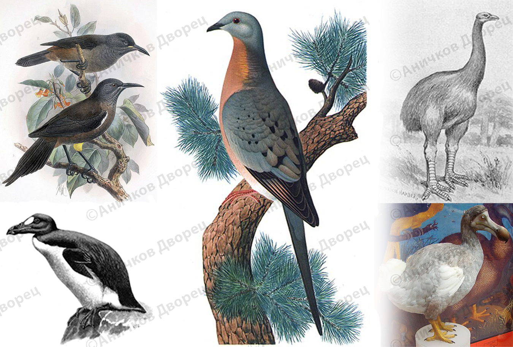

Для начала я бы хотел рассказать о том, что все эти птицы были
занесены в Красную книгу, у них был статус вымирания,
но все же этих птиц либо не защитили, либо уничтожили равнодушные
к природе люди, сделавшие это ради сомнительной выгоды. Остров Маврикий пострадал больше всех, да и животные там были очень красивые. Поэтому я расскажу о нём подробнее.